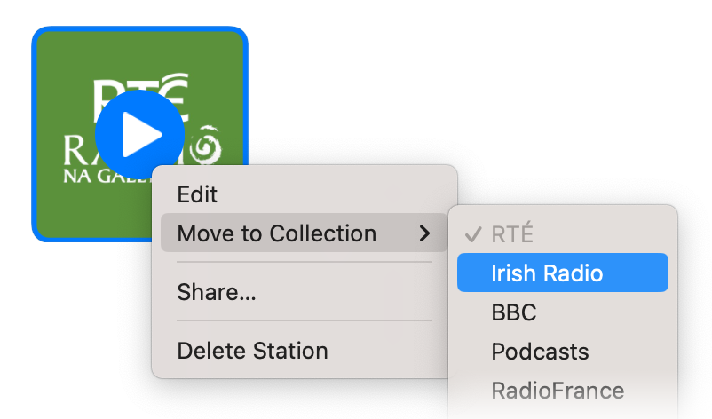

You can move a station by right-clicking, control-clicking, or, on iOS, long-pressing on it, and choosing Move to Collection in the context menu, then choosing a destination.
You can also reorder stations or move them between collections using drag and drop.
See also: Adding Artwork